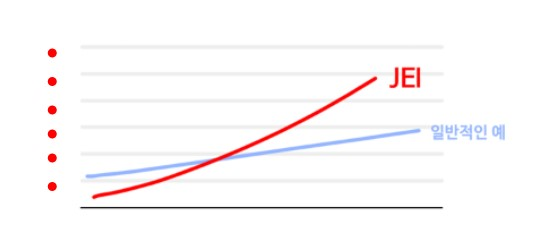

아이의 정확한 학습출발점은 학습의 성과를 높여주는 힘이 됩니다.
하지만 너무 낮거나 높은 수준에서 학습을 시작하면
학습에 흥미를 잃고 자신감도 떨어지게됩니다.
이떄문에 아이의 수준을 정확하게 진단하는 평가를 통해
정확한 학습출발점을 정하는 것이 중요합니다.
재능교육은 스스로 학습법을 통해 어린이 누구나 각자의 수준에 맞는 학습을 진행하고
자신의 능력을 무난히 발휘할수 있는 올바른 학습환경을 만들어왔습니다.
어린이 하나하나마다의 특성과 수준을 파악하여 운영되는 스스로학습 시스템,
칭찬과 격려로 자신감을 북돋워주는 선생님.
그리고 가장 가까이에서 규칙적인 학습을 유도하는 학부모가 함께 어우려져
최고의 학습환경을 조성합니다.
정확한 학습출발점이란 '아이가 가장 쉽게, 가장 잘 이해할 수 있는 학습단계'
바로 아이가 흥미를 가지고 스스로 학습할 수 있는 곳을 말합니다.
